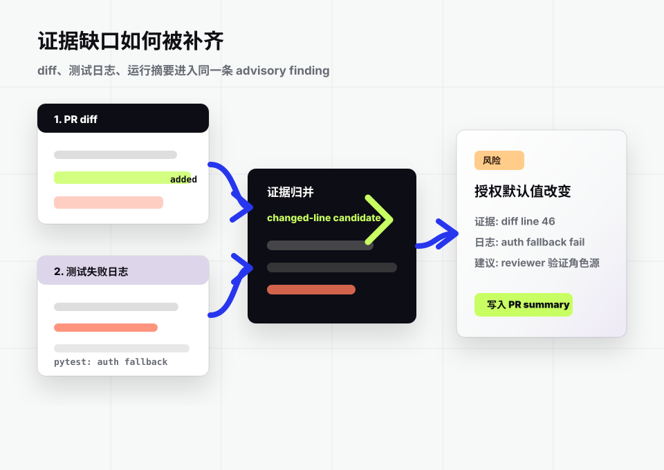
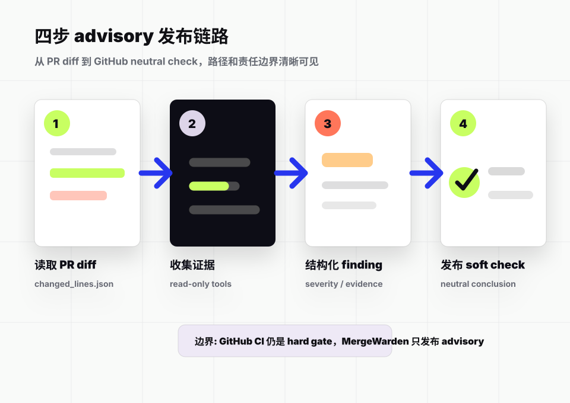
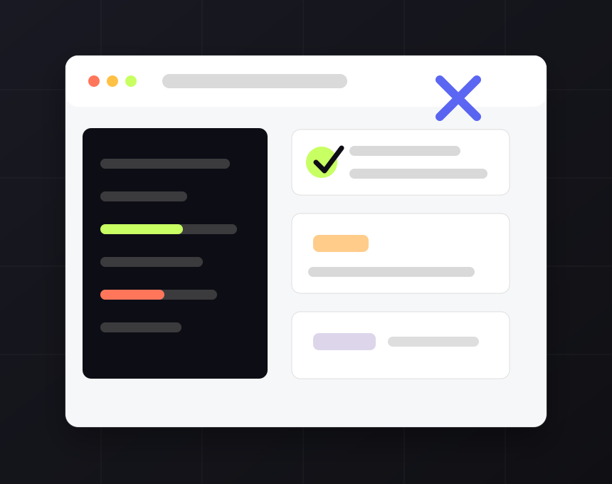
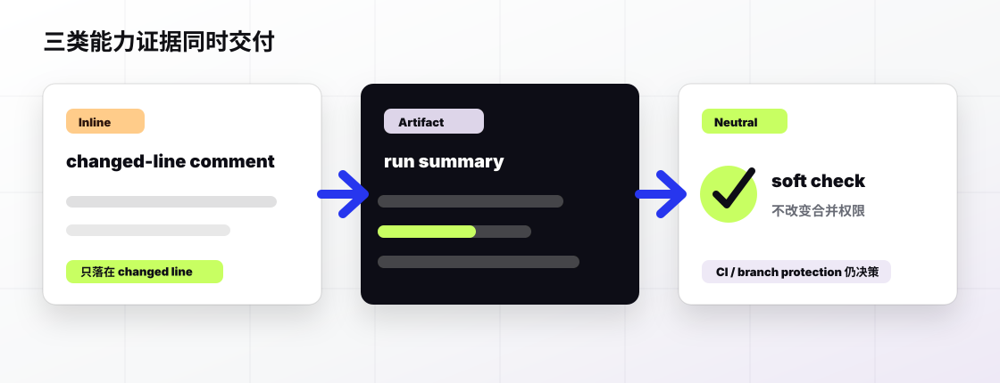

缓存回退改变了授权默认值
证据来自 diff、路由契约和测试输出。
给 PR 合并前补一层证据软检查。
它把 diff、仓库上下文、测试输出与运行摘要整理成 GitHub 可读的 advisory 信号， 帮 reviewer 看见 CI 很难解释的风险，同时把合并 authority 留给现有分支保护。
证据缺口
测试证明已知契约，reviewer 还要处理变更假设、缺失上下文、危险默认值与失败日志。 MergeWarden 的定位不是更吵的 bot，而是把这些判断整理成可复盘证据。
每条 finding 都要带位置、证据、建议与信心边界。可评论的结果必须落回 changed line， 不能精准定位的发现留在 check summary。

四步工作流
运行边界跟仓库保持一致：CLI 和 FastAPI 产出结构化结果，GitHub Actions 只把它转换成 neutral check 与必要的 review comments。

GitHub Actions first
首版不是新 dashboard，而是一段可复制的 workflow：生成 PR diff、运行 review、 上传运行摘要，并在有权限时发布 advisory 反馈。

name: MergeWarden advisory
on:
pull_request:
types: [opened, synchronize, reopened]
permissions:
contents: read
checks: write
pull-requests: write
jobs:
advisory:
runs-on: ubuntu-latest
steps:
- uses: actions/checkout@v4
- name: Build PR diff
run: python scripts/github_changed_lines.py --output changed_lines.json
- name: Review diff
run: >
python cli.py review .
--diff
--output-json review_response.json
--summary-json run_summary.json
- name: Publish advisory
run: >
python cli.py github-advisory publish
--repo "$GITHUB_REPOSITORY"
--pr-number "${{ github.event.pull_request.number }}"
--head-sha "${{ github.event.pull_request.head.sha }}"
--response-json review_response.json
--changed-lines-json changed_lines.json
--dry-run默认 dry-run；团队准备好后再切换发布模式。
能力证据
MergeWarden 把重复的证据整理交给工具链，把合并判断留给 reviewer、CI 与团队策略。
inline feedback 必须指回 changed line 或 changed hunk，避免对未改动文件制造噪音。
每次运行都能暴露状态、工具调用、停止原因、发布状态和证据摘要。
输出建议、证据和 soft check；不自动 approve，不替代 branch protection。

集成入口
当前宣传站独立于 runtime；产品本身继续围绕 CLI、HTTP contracts、CI artifacts 与 GitHub PR。
常见问题
保守的产品叙事是功能的一部分：建议可以自动化，合并判断不能越权。
不会。CI 和 branch protection 仍然是 hard authority；MergeWarden 只提供 advisory findings、运行摘要和 review 证据。
最短闭环在 GitHub PR review 内。dashboard 可以后续承载组织级历史，但第一步应该把 PR 反馈跑稳。
未改动文件可以作为证据来源；inline comments 应限制在 changed lines，不适合定位的发现留在 summary。
comment lifecycle、webhook/auth、async execution、durable storage 和更完整的运行观测。
先用 dry-run 看输出，再把 advisory publishing 接进团队的 GitHub Actions。